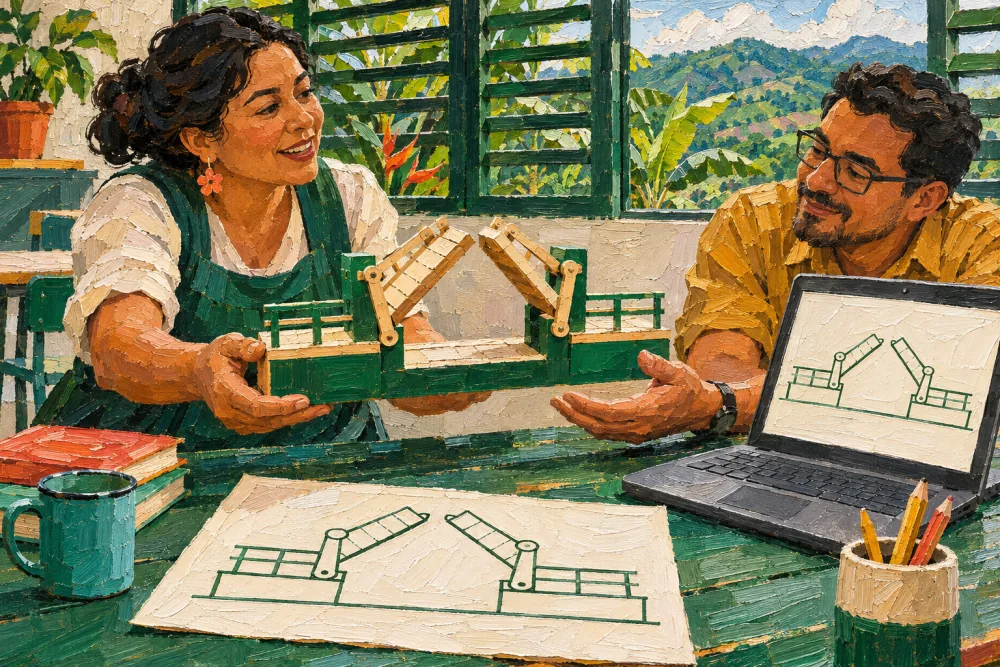

Contenidos abiertos
Proyectos de grado, el Modelo MILC y artículos, en acceso abierto.

Trabajos de grado (especialización, maestría y doctorado), el Modelo MILC y artículos, en acceso abierto y citables. Aquí se publicarán también los artículos tipo blog de los docentes.